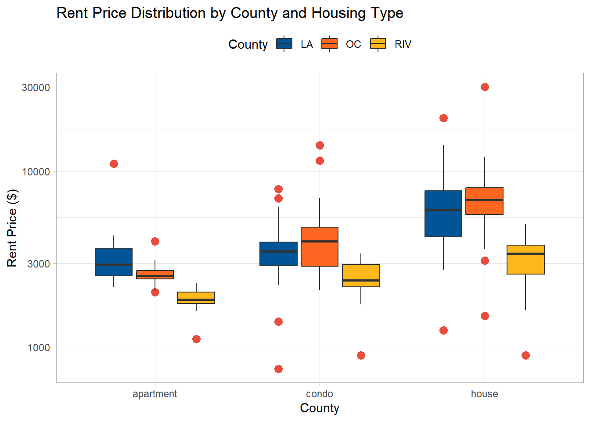

here::i_am("NatsPortfolio/SoCalRentProject.qmd")here() starts at C:/Users/natal/OneDrive/DesktopLoad in packages and data
here::i_am("NatsPortfolio/SoCalRentProject.qmd")here() starts at C:/Users/natal/OneDrive/Desktoplibrary(readr)
library(dplyr)Warning: package 'dplyr' was built under R version 4.4.3
Attaching package: 'dplyr'The following objects are masked from 'package:stats':
filter, lagThe following objects are masked from 'package:base':
intersect, setdiff, setequal, unionlibrary(stringr)
library(tidyverse)Warning: package 'ggplot2' was built under R version 4.4.3── Attaching core tidyverse packages ──────────────────────── tidyverse 2.0.0 ──
✔ forcats 1.0.0 ✔ purrr 1.0.4
✔ ggplot2 3.5.2 ✔ tibble 3.2.1
✔ lubridate 1.9.4 ✔ tidyr 1.3.1── Conflicts ────────────────────────────────────────── tidyverse_conflicts() ──
✖ dplyr::filter() masks stats::filter()
✖ dplyr::lag() masks stats::lag()
ℹ Use the conflicted package (<http://conflicted.r-lib.org/>) to force all conflicts to become errorslibrary(janitor)
Attaching package: 'janitor'
The following objects are masked from 'package:stats':
chisq.test, fisher.testSoCalRent <- read_csv(here::here("NatsPortfolio/ProjectData/SoCalDataRaw_2025.csv"))Rows: 333 Columns: 7
── Column specification ────────────────────────────────────────────────────────
Delimiter: ","
chr (7): Price, Beds, Baths, SqFt, Address, Type, County
ℹ Use `spec()` to retrieve the full column specification for this data.
ℹ Specify the column types or set `show_col_types = FALSE` to quiet this message.Finding clean and usable public data turned out to be more challenging than expected. After exploring several sources, I decided to use Redfin as my main platform, and relied on Excel’s web tools to auto-generate tables directly from listing URLs. I focused on three Southern California counties — Orange County, Riverside County, and Los Angeles County.
For each county, I gathered data on three different property types: houses, condos, and apartments. While the raw data I pulled was relatively structured, it still required some cleaning.
head(SoCalRent)# A tibble: 6 × 7
Price Beds Baths SqFt Address Type County
<chr> <chr> <chr> <chr> <chr> <chr> <chr>
1 $3,195/mo 4 beds 2.5 baths 1668.00 4001 Landau Ct, Riverside, CA… house RIV
2 $4,000/mo 4 beds 2 baths 2200.00 18590 Roberts Rd, Riverside, … house RIV
3 $2,300/mo 2 beds 1 bath 900.00 3468 Wallace St, Jurupa Valle… house RIV
4 $3,449/mo 3 beds 2.5 baths 1,970 531 Atwood Ct, Riverside, CA … house RIV
5 $1,850/mo 1 bed 1 bath 400 2767 Attenborough Dr, Riversi… house RIV
6 $1,950/mo 1 bed 1 bath 440 10671 Sagittarius Dr, Riversi… house RIV There were a few listings with missing data in certain columns, so for the sake of sanity, I just removed them.
Price came in various formats (e.g., $3,185/mo, $1940+/mo), so I removed dollar signs, commas, and plus signs, then converted the column to numeric.
Beds and Baths also had inconsistent formats like 1 bed, 3 beds, or even ranges like 2–4 beds. I stripped out the words “bed(s)” and “bath(s)”, and for ranges, I took the smallest number. Both columns were then converted to numeric.
SqFt was the messiest. It appeared as 1668.00, 1,970, or ranges like 410–480. I removed commas and decimal points (since I didn’t need the .00), and again, for ranges, I used the lower bound. This column was also converted to numeric.
For the address column, I kept it in case I wanted to refer to the full address later. But I also extracted just the city name into a separate column to analyze trends across cities.
Lastly, I removed any listings where either Beds or Baths were equal to zero.
After cleaning, I was left with 278 observations out of the original 333.
Rent_Clean <- SoCalRent |>
#cleaning out any listings that have any empty data for the sake of my sanity
filter(!is.na(Price), !is.na(Beds), !is.na(Baths), !is.na(SqFt), !is.na(Address)) |>
# Remove rows where SqFt starts with an en dash (—)
filter(!str_starts(SqFt, "—")) |>
mutate(
# Price column: remove any $, +, /mo and change it to a numeric variable
Price = str_remove_all(Price, "\\$|,|/mo|\\+"),
Price = as.numeric(Price),
# Beds column: take the smallest number of beds and change it to a numeric variable
Beds = str_extract(Beds, "^\\d+"),
Beds = as.numeric(Beds),
# Baths column: take the smallest number of baths and change it to a numeric variable
Baths = str_extract(Baths, "^\\d+(\\.\\d+)?"),
Baths = as.numeric(Baths),
# SqFt column: takeing the first number from ranges, removes and commas or dashes and change it to a numeric variable
SqFt = str_remove_all(SqFt, ","), # Remove commas
SqFt = case_when(
str_detect(SqFt, "-") ~ as.numeric(str_extract(SqFt, "^[0-9]+")),
TRUE ~ as.numeric(SqFt)
),
# City Column: I decided to just make a new column "titled city" that was the address column is still there but I have just the city in a seperate column
City = str_split_fixed(Address, ",", 3)[, 2]
) |>
# If beds or baths is 0, remove the row
filter(Beds != 0, Baths != 0)Warning: There was 1 warning in `mutate()`.
ℹ In argument: `SqFt = case_when(...)`.
Caused by warning:
! NAs introduced by coercionhead(Rent_Clean)# A tibble: 6 × 8
Price Beds Baths SqFt Address Type County City
<dbl> <dbl> <dbl> <dbl> <chr> <chr> <chr> <chr>
1 3195 4 2.5 1668 4001 Landau Ct, Riverside, CA 92501 house RIV " Ri…
2 4000 4 2 2200 18590 Roberts Rd, Riverside, CA 92… house RIV " Ri…
3 2300 2 1 900 3468 Wallace St, Jurupa Valley, CA… house RIV " Ju…
4 3449 3 2.5 1970 531 Atwood Ct, Riverside, CA 92506 house RIV " Ri…
5 1850 1 1 400 2767 Attenborough Dr, Riverside, C… house RIV " Ri…
6 1950 1 1 440 10671 Sagittarius Dr, Riverside, C… house RIV " Ri…I decided to look at the data by grouping by County and housing Type. In general the most type of housing was “House (114)”. LA have fewer apartment listings even though its more of an urban location. Riverside (tied with LA) with the most house listings fitting the suburban expectation. The listing size for each county is about 90 for each county, which is good for comparison. Looking through the listings its important to take into consideration that some of the cheaper house/condo listings are renting a ROOM within the place.
Rent_Clean|>
tabyl(County,Type)|>
adorn_totals(c("row", "col")) County apartment condo house Total
LA 15 38 39 92
OC 23 39 36 98
RIV 24 25 39 88
Total 62 102 114 278Rent_Clean |>
count(County,Type)|>
ggplot(aes(x = County, y = n, fill = Type)) +
geom_bar(stat = "identity", position = "dodge") +
labs(title = "Distribution of Housing Types by County",
x = "County", y = "Number of Listings")Showing the average and median rent prices by county and housing type. OC houses are more expensive. As expected apartments are the cheapest/afforable option for each county with riverside being the most affordable. Condo prices vary accross the board which could mean newer luxury built condos (think irvine a newer built area) in certain areas and older smaller condos in others(smaller older cities in riverside). The median is less than the mean (specifically in LA and OC). This means that there is a few expensive outlier listings that drive the average up.
Rent_Clean |>
group_by(County, Type)|>
summarize(mean_price = round(mean(Price, na.rm = TRUE)),
median_price = median(Price, na.rm = TRUE),
.groups = "drop")# A tibble: 9 × 4
County Type mean_price median_price
<chr> <chr> <dbl> <dbl>
1 LA apartment 3525 2950
2 LA condo 3673 3500
3 LA house 6547 5995
4 OC apartment 2595 2535
5 OC condo 4385 4000
6 OC house 7388 6850
7 RIV apartment 1885 1865
8 RIV condo 2479 2400
9 RIV house 3169 3400summary_table <- Rent_Clean |>
group_by(County, Type) |>
summarize(
mean.price = round(mean(Price, na.rm = TRUE)),
.groups = "drop"
)
ggplot(summary_table, aes(x = interaction(County, Type), y = mean.price, fill = County)) +
geom_col() +
scale_fill_manual(values=c("RIV"="#084B83","OC"="#FF66B3","LA"="#42BFDD"))+
labs(
title = "Average Rent Price by County and Type",
x = "County & Type",
y = "Average Rent Price"
) +
theme_light() +
theme(axis.text.x = element_text(angle = 45, hjust = 1))
Using quartiles (top 25% and bottom 75%) I was able to choose a lower bound and upper bound to then find the outliers. As seen the table below– the outliers are way outside of usually rent price.
outliers <- Rent_Clean |>
group_by(County) |>
mutate(
Q1 = quantile(Price, 0.25),
Q3 = quantile(Price, 0.75),
IQR = Q3 - Q1,
lower_bound = Q1 - 2 * IQR,
upper_bound = Q3 + 2 * IQR
) |>
filter(Price < lower_bound | Price > upper_bound)
print(outliers)# A tibble: 5 × 13
# Groups: County [2]
Price Beds Baths SqFt Address Type County City Q1 Q3 IQR
<dbl> <dbl> <dbl> <dbl> <chr> <chr> <chr> <chr> <dbl> <dbl> <dbl>
1 13999 3 3 1854 13328 Galewood S… house LA " Sh… 2999. 5996. 2998.
2 20000 5 4 4180 24803 Wooded Vis… house LA " We… 2999. 5996. 2998.
3 12000 3 3 2743 2222 Bancroft Av… house LA " Lo… 2999. 5996. 2998.
4 12500 3 2 1899 3670 May St, Los… house LA " Lo… 2999. 5996. 2998.
5 30000 2 2 2000 1313 Disneyland … house OC " An… 2602. 6412. 3810
# ℹ 2 more variables: lower_bound <dbl>, upper_bound <dbl>ggplot(Rent_Clean, aes(x = County, y = Price, fill = Type)) +
geom_boxplot(outlier.shape = 16, outlier.colour = "red", outlier.size = 3) +
labs(title = "Rent Price Distribution by County and Housing Type",
x = "County", y = "Rent Price ($)") +
theme_minimal() +
theme(legend.position = "top")
Looking at a summary table of mean price, average size, and average beds and baths by housing type and county. I’ve inclused price per SqFt to compare efficency costs. LA has the highest average SqFt, its also just the most expensive meaning its the least effecient. WHich could mean its high in demand. Riverside has smaller places but cheaper prices so an efficeint price per SqFt. OC has the biggest space.
For apartment prices, they are coonsidered smaller but doesnt necessarily mean the cheapest. for the OC area the average SqFt is 764 with the average price being $3.42/SqFt. The higher cost mihgt be for convience, ammenities or location..
Summary_table <- Rent_Clean|>
group_by(County, Type)|>
mutate(price_per_sqft = Price / SqFt) |>
summarize(
mean.price= round(mean(Price)),
mean.SqFt= round(mean(SqFt)),
mean.beds= round(mean(Beds)),
mean.baths=round(mean(Baths)),
mean_price_per_sqft = round(mean(price_per_sqft)),
.groups = "drop" )|>
select(County, Type, mean_price_per_sqft)
print(Summary_table)# A tibble: 9 × 3
County Type mean_price_per_sqft
<chr> <chr> <dbl>
1 LA apartment 4
2 LA condo 3
3 LA house 4
4 OC apartment 3
5 OC condo 4
6 OC house 3
7 RIV apartment 3
8 RIV condo 2
9 RIV house 2Finding correlation between Price and beds/baths/SqFt.
Riverside: has a strong relaionship across beds, baths, and sqft. Meaning a pretty uniform housing market. LA: has the strongest corrrelation with SqFt meaning the market is driven by space then the commoditys. OC has medocre correlation meaning some other factors outside of beds, baths, sqft may be influencing the rent. (think schools, neighborhoods etc)
# correlation analysis between price and beds
Rent_Clean|>
group_by(County)|>
summarise(
Bed_cor=cor(Price, Beds),
Baths_cor=cor(Price, Baths),
SqFt_cor=cor(Price, SqFt))# A tibble: 3 × 4
County Bed_cor Baths_cor SqFt_cor
<chr> <dbl> <dbl> <dbl>
1 LA 0.570 0.494 0.729
2 OC 0.450 0.539 0.598
3 RIV 0.901 0.782 0.799Rent_Clean |>
filter(Price < 10000) |>
mutate(County = as.character(County)) |>
bind_rows(
Rent_Clean |>
filter(Price < 10000) |>
mutate(County = "All Counties")
)|>
ggplot(aes(x = Price, fill = County)) +
geom_histogram(binwidth = 800, color = "black") +
facet_wrap(~ County, scales = "free_y") +
labs(
title = "Rent Price Distribution: Overall and by County",
x = "Rent Price ($)",
y = "Number of Listings"
)
For this project, I want to approach rental affordability from a personal angle, while keeping it general enough that others could adapt it to their own situations. My main question is: What rental listings offer the best value given a specific salary? It’s a broad question, but the goal is to make it practical and grounded in real-life decision-making.
A common rule of thumb is that individuals shouldn’t spend more than 30% of their income on rent. Based on this, I’ll introduce a salary variable to simulate what someone can realistically afford. This variable will help filter out listings that exceed that 30% income threshold.
To make the analysis more flexible, especially for listings with multiple bedrooms, I’m assuming that shared housing is an option. That means I’ll consider a unit affordable if the rent per bedroom is within 30% of a person’s monthly income. This way, I can include multi-bedroom apartments that might be affordable when split among roommates.
salary <- 60000 # yearly salary
monthly_income <- salary / 12 #calculating monthly paycheck assuming monthly rent payments
max_rent_per_room <- (monthly_income * 0.30) #allowing only 30% of income to be sued for rent
Rent_Clean_Affordable <- Rent_Clean |>
mutate(
rent_per_room = Price / Beds,
affordable = rent_per_room <= max_rent_per_room
)|>
filter(affordable== TRUE)now i have to deciede whether or not a listing it worth its value. we can begin by looking at SqFt per Price to determine if you getting the most space out of your value.
Rent_Clean_Affordable|>
mutate(
sqft_per_dollar = SqFt / Price
)|>
arrange(desc(sqft_per_dollar))# A tibble: 124 × 11
Price Beds Baths SqFt Address Type County City rent_per_room affordable
<dbl> <dbl> <dbl> <dbl> <chr> <chr> <chr> <chr> <dbl> <lgl>
1 750 4 4 3000 217 E 29… condo LA " Lo… 188. TRUE
2 899 1 1 1524 4283 5th… house RIV " Ri… 899 TRUE
3 900 1 1 1068 200 E Al… condo RIV " Ri… 900 TRUE
4 4200 5 4.5 3685 19737 Co… house RIV " Ri… 840 TRUE
5 1109 2 2 904 | 3549 I… apar… RIV " Ri… 554. TRUE
6 3900 4 3 3111 8515 McA… house RIV " Ri… 975 TRUE
7 3790 4 3 2950 17346 Co… house RIV " Ri… 948. TRUE
8 4100 5 3 2700 4541 Bra… house RIV " Ri… 820 TRUE
9 4650 5 3 2909 16392 Fa… house RIV " Ri… 930 TRUE
10 3395 4 3.5 2100 4054 Bou… condo RIV " Ju… 849. TRUE
# ℹ 114 more rows
# ℹ 1 more variable: sqft_per_dollar <dbl>even after all my data cleaning… this listing got thru. I decided to investigate it for the heck of it.
217 E 29th St Unit 217 And 217 1 2, Los Angeles, CA 90011: Upon further investigation. This is a listing for 2 units with a total of 4 beds and 4 baths. Meaning each unit has 2 beds and 2 baths. Then the listing explains how each bedroom can house 2-3 people meaning acording to my code, rent cost would only be about $187 a month give or take a roomate or two. As GREAT of a rent price this seems. On the bright side-the listing seems to be a affordable housing option for someone who really needs it. On the more weary side- the listing seems sketchy and im unfortunately, not interested.
Rental Description: Our brand new, all-inclusive shared rooms are move-in ready just bring your bag and settle into comfort, convenience, and community in the heart of the city. All-inclusive rates starting at just $700/month only 2-3 person per room ! Move in today stay as long or as little as you need All utilities Wi-Fi included Weekly cleaning of shared spaces Private ensuite bathrooms in most rooms On-site laundry for easy living Street & paid parking available On-site manager for support when you need it No credit checks. No deposits. No SSN. Just a valid ID from any country.Spots are limited and going fast message now and claim your bed today!”